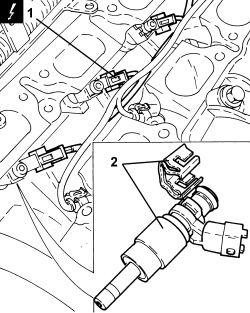

1056F66 LEFT CYLINDER HEAD INJECTOR SET - R.R.
- Path
- Procedures > 10 ENGINE > 1056 PETROL INJECTION SYSTEM > 1056F PETROL DIRECT INJECTION SYSTEM > 1056F66 LEFT CYLINDER HEAD INJECTOR SET - R.R.
- Kind
- repair procedure (removal / refitting; the operation number is the code)
- Applies to
- engines: 3.2 JTS; all production periods
- Interactive page
- https://sloeber94.github.io/elrnDB/alfa/159/en/#/939005272
Applies to: engines: 3.2 JTS; all production periods
 Removing
Removing
 Refitting
RefittingOp. 1056F74 LOW PRESSURE PIPE TO FUEL PRESSURE PUMP R R
Op. 1056F76 HIGH PRESSURE PIPE FROM PRESSURE PUMP TO SINGLE FUEL MANIFOLD PIPE R R
Op. 1072B50 AIR CHAMBER - R.R.
Op. 1056F61 LEFT CYLINDER HEAD FUEL MANIFOLD PIPE - R.R.
1. Disconnect the electrical connections for the injectors.
Description | Connector | |
|---|---|---|
1 | Injector |
2. Remove the injectors complete with retaining clips and O-rings.

Applies to: engines: 3.2 JTS; all production periods
Refitting
Removing- Place the injectors for the left cylinder head in their seats complete with retaining clips and lubricate the O-rings with engine oil.
- Connect the electrical connections for the injectors.
Op. 1056F61 LEFT CYLINDER HEAD FUEL MANIFOLD PIPE - R.R.
Op. 1072B50 AIR CHAMBER - R.R.
Op. 1056F76 HIGH PRESSURE PIPE FROM PRESSURE PUMP TO SINGLE FUEL MANIFOLD PIPE R R